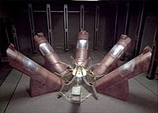
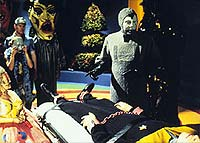
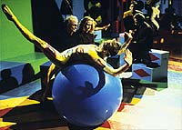
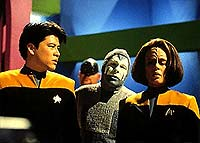
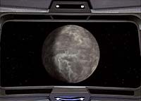
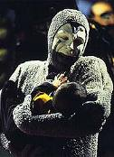

|
MANCHETE
DO EPISDIO
Enredo abandona premissa da série
para nos dar personificao do medo
Episódio
anterior | Prximo
episódio
Sinopse:
Data Estelar: desconhecida.
 A
Voyager recebe uma mensagem automtica de uma colnia Kohl, cujos
membros sobreviveram a uma catstrofe ambiental atravs da hibernao
artificial. A tripulao transporta os receptculos a bordo e
descobre dois humanides mortos e trs em suspenso animada, com
suas mentes conectadas a um sistema de sensores controlados por um
computador. O Doutor revela que as duas vtimas morreram de ataque
do corao, resultado de extremo estresse mental. Visando reanimar
os sobreviventes, Kim e Torres entram nos receptculos e
conectam-se ao computador.
Eles so atirados a um ambiente semelhante a um carnaval bizarro
conduzido por um Palhao malvolo, cujos seguidores arrastam o
alferes para uma guilhotina. Embora o Palhao tenha poupado Kim, os
oficiais logo entendem por que os sobreviventes Kohl estavam
literalmente morrendo de medo. Uma vez que o Palhao dependia das
mentes dos colonos conectadas ao sistema para sobreviver, ninguém
--inclusive Harry e B'Elanna-- conseguia sair do estado de dormncia.
Estavam todos escravizados por uma personificao do medo. Torres
recebe permissão para deixar aquela realidade para alertar a capitã
de que se os receptculos de hibernao fossem desligados, todos
morreriam.
 Enquanto
Janeway pensa em algum tipo de negociao, o Palhao atormenta
Kim sem piedade. O Doutor então enviado para discutir a libertao
dos refns, mas o ser se recusa a cooperar, o que leva a capitã a
tramar uma missão de resgate. Seu primeiro plano falha, quando o
Palhao descobre que Torres tentava desativar seu programa.
Furioso, ele pe um dos colonos na guilhotina, onde o homem
aterrorizado sucumbe a uma parada cardaca. Para evitar mais
mortes, Janeway ordena que B'Elanna pare.
A capitã prope então uma oferta final ao Palhao: trocar os
cativos por ela própria. Ele aceita a barganha, apenas para
descobrir que seu prêmio era apenas uma imagem holográfica. Sem
ninguém vivo para atormentar, o Medo vencido e desaparece para
sempre.
Comentrios:
"The Thaw"
tem uma premissa das mais desafiadoras. Como criar uma história em
que seja possvel personificar o medo? Por incrvel que parea,
os roteiristas conseguiram elaborar uma trama que permitisse que
isso fosse feito de forma convincente.

bem verdade que o episódio falta totalmente com a premissa de Voyager.
Em momento algum citado o lema "voltar para casa". Pelo
contrário, parece muito mais uma história seguindo o estilo de A
Nova Geração. A diferena bsica que, se o capitão dessa
nave fosse Jean-Luc Picard, dificilmente a tripulao teria ferido
os protocolos de no-interferncia da Frota.
Sim, por incrvel que parea, a circunstncia envolvia a Primeira
Diretriz. Aparentemente, o problema todo foi descartado com a
simples constatao de que aquela civilizao tinha capacidade
de dobra (naves foram detectadas no planeta), mas isso, se permite
uma situao de primeiro contato, dificilmente d a liberdade
para o grau de interferncia providenciado pela Voyager. A capitã
no deveria ter transportado os colonos a bordo em primeiro lugar,
e muito menos enviado seus oficiais para uma missão daquela.
Janeway se comportou muito mais como Kirk e sua "diplomacia
caubi" do sculo 23 do que como a austera capitã-modelo do
sculo 24.
 De
qualquer forma, a quebra com a premissa da série, embora faa do
enredo uma situao "coringa" (aplicvel a quaisquer séries
ou personagens de Jornada), acabou dando uma flexibilidade
maior. Foi mais honesto do que dizer: a Voyager está procurando o
composto "x", que está faltando nos condutes do ncleo
de dobra, e detecta grandes quantidades dele no planeta
"Y". Afinal, no quadrante Delta ou no, continuamos a ser
os mesmos exploradores curiosos e xeretas.
Os personagens no tiveram muito mais a ganhar do enredo. No
surpreendente, tendo em vista a flexibilidade da história. E a essa
altura da série, o telespectador deve estar mesmo se perguntando o
que Harry Kim fez em sua ltima encarnao para merecer passar
por tudo o que passa. Recm-graduado da Academia e em sua primeira
missão, a nave em que serve como alferes lançada ao outro lado
da galáxia e todo contato com a Terra brutalmente terminado.
Depois, transportado para outra dimenso, a um ps-morte
alternativo e agora aterrorizado por suas prprias emoes,
personificadas na figura do Palhao.
 Ao
lado de Harry, B'Elanna, de cujo sangue Klingon muitos devem estar
sentindo falta. Ela estava estranhamente calma e controlada em uma
situao de extrema tenso. Por que o Palhao a libertou to
rapidamente, sem ao menos atorment-la? Faltou presena na história,
assim como faltou a presena de Tom, Chakotay, Tuvok e Neelix.
Basicamente, o desenvolvimento girou em torno de Janeway, do Doutor
e do Palhao.
Sobre o ambiente para o qual Kim e Torres foram transportados, basta
dizer pouca coisa. A realidade virtual gerada pelo computador era
mais infantil do que assustadora, embora viver sob aquela condio
durante 19 anos no deva ser nada agradvel. De qualquer modo,
uma representao extremamente inteligente do medo --algo que
enerva ao ponto de provocar riso --no aquela risada alegre, mas
aquela risada tensa, desesperada. A figura do Palhao como
personificao do medo extremamente convincente, graas
brilhante atuao de Michael McKean.
 Embora
o episódio perca ritmo ao longo de sua execuo, por vezes
tornando-se repetitivo e com pouca movimentao, os roteiristas
pelo menos conseguiram evitar as solues fáceis --criadas por
tecnobaboseira ou solues tecnolgicas. Em princpio, parece
que B'Elanna, com sua proposta de desativar os elementos do sistema,
iria acabar conseguindo dar um jeito no problema. Fazer a ideia
fracassar e causar a morte de um dos refns foi um golpe de mestre,
que trouxe nova vida ao episódio para o ato final --brilhantemente
pensado e arquitetado.
Janeway mostra sua posio de liderana e sua grande capacidade
ao subjugar o Palhao, impondo a ele um ultimato, trocando os refns
por ela mesma. As cenas finais, em que a capitã frita o Palhao de
medo, so maravilhosas. O único reparo que se pode fazer o fato
de Janeway de fato no estar conectada ao sistema, mas sim ter
usado um truque e uma projeo holográfica para enganar o Palhao.
Seria muito mais legal se ela tivesse realmente se conectado ao
sistema, mas tivesse vencido o medo durante os minutos que levavam
para que ele percebesse seus pensamentos, utilizando as mesmas armas
que ele usava --matando-o de medo por anunciar sua futura e inevitvel
destruio. Mesmo assim, da forma como foi escrito e executado, o
ato final j poderoso o suficiente. E a cena final do Palhao,
com a reduo gradual da luz, algo de espetacular. Nada como
ter o Diretor de Fotografia da série como diretor de um episódio...
Citaes:
Medo - "How am I supposed
to negotiate if I don't know what you're thinking?"
("Como eu devo negociar se no sei o que você está
pensando.")
Doutor - "I have a very trustworthy face."
("Eu tenho um rosto muito confivel.")
Medo - "Well, you certainly know how to bring a party to a
halt."
("Bem, você sabe como acabar com uma festa.")
Doutor - "I don't get out very much."
("Eu no saio muito.")
Trivia:
 Michael McKean faz uma participação especial no episódio. Na
televisão, j atuou em séries como "Arquivo-X",
"Lei & Ordem", "Batman do Futuro" (voz),
"Murphy Brown", "Friends", "The Nanny",
"Lois & Clark", "Animaniacs" (voz), "Os
Simpsons" (voz) e "Assassinato por Escrito".
Michael McKean faz uma participação especial no episódio. Na
televisão, j atuou em séries como "Arquivo-X",
"Lei & Ordem", "Batman do Futuro" (voz),
"Murphy Brown", "Friends", "The Nanny",
"Lois & Clark", "Animaniacs" (voz), "Os
Simpsons" (voz) e "Assassinato por Escrito".
Shannon O'Hurley também j fez notveis aparies na TV;
"Boston Public", "Arquivo-X",
"Becker", "Pensacola", "JAG", "Party
of Five", "Profiler", entre outros.
A atriz Roxann Dawson fez o seguinte comentrio sobre o episódio:
- Havia um episódio que eu no aparecia muito, mas eu amei, um,
sabe, eu sou to ruim com os nomes porque eu leio o nome no roteiro
e então apenas fao as cenas e eu nunca lembro dos nomes. Aquele
com o palhao interpretado por Michael McKean.
- "The Thaw".
- "The Thaw". Eu odiei esse nome, ele no era...
inteligvel, mas eu achei que o episódio era fantstico e inteligvel.
Nosso diretor de fotografia o dirigiu e fez um material maravilhoso
no final. Eu achei que o episódio tinha muito a dizer sobre medo e
a presena do medo na vida de algum e seu controle sobre você, e
eu amo material como aquele. Eu gosto mais desses. Talvez vocês
prefiram todo aquele negcio de ao, e eu gosto dos efeitos e
tudo mais também, mas eu gosto tanto quando o episódio tem algo a
dizer que realmente faz um clique. Quero dizer.
Antes de se chamar "The Thaw", o episódio chamava
"Fear the Clown" ("Tema o Palhao").
Esse episódio marcou a estreia de Marvin Rush, diretor de
fotografia da série, na direção.
Ficha
técnica:
História de Richard Gadas
Roteiro de Joe Menosky
Direo de Marvin V. Rush
Exibido em 29/04/1996
Produção: 039
Elenco:
Kate Mulgrew como
Kathryn Janeway
Robert Beltran como Chakotay
Roxann Biggs-Dawson como B'Elanna Torres
Robert Duncan McNeill como Tom Paris
Jennifer Lien como Kes
Ethan Phillips como Neelix
Robert Picardo como Doutor
Tim Russ como Tuvok
Garrett Wang como Harry Kim
Elenco convidado:
Michael McKean como O Palhao
Thomas Kopache como Viorsa
Carel Struycken como Espectro
Patty Maloney como pequena mulher
Tony Carlin como Mdico Kohl
Shannon O'Hurley como Programador Kohl
Episódio
anterior | Prximo
episódio
|